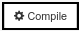
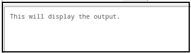

Cómo usar Codeboard
Pasos / Consejos para usar Codeboard
- El panel izquierdo muestra la carpeta 'Root' que contiene los archivos 'rectangulo.cpp' y 'resultados.txt'. Esto se muestra en la figura que se muestra a continuación. Haga clic en el archivo 'rectangulo.cpp' y su 'Ventana de Código' aparecerá a la derecha. El nombre del archivo '.cpp' varia en cada ejercicio.
- La figura que se muestra a continuación muestra la 'Ventana de Código' de 'rectangulo.cpp'. Necesitas colocar tu código en esta ventana. Una estructura básica del
programa C++ ya está escrita para su rápida referencia.
- En el panel izquierdo de clic en el archivo 'resultados.txt' y su 'Ventana de Código' aparecerá a la derecha. Esto se muestra en la figura que se muestra a continuación.
- Aquí necesitas escribir la salida (resultados) de tu programa. Para el correcta lectura de tus resultados, NO pegues los resultados obtenidos de tu programa, escríbelos directamente en la ventana.
- Después de pegar su programa y escribir sus resultados, haga clic en el botón  para compilar su código. Si su programa no tiene ningún error, entonces debería mostrarse un
mensaje que dice 'Compilation successful (Compilación exitosa) en la Ventana de Salida'; de lo contrario, los detalles de los errores se muestran en la 'Ventana de Salida'.
- Cuando su programa se compile con éxito, haga clic en el botón para ejecutar su programa. La salida de su programa se mostrará en la 'Ventana de Salida'. Dependiendo de su programa, es posible que deba proporcionar entradas a su código. Las entradas deben ingresarse en la 'Ventana de Entrada'.
- Esta es la 'Ventana de Entrada' . Si su programa acepta cualquier entrada (usando la instrucción cin), entonces debe proporcionar su entrada en esta ventana. Después de proporcionar cada entrada, debe presionar la tecla 'Enter' en su teclado. Estas entradas también se mostrarán en la 'Ventana de Salida'.
- La 'Ventana de Salida' se muestra a continuación. La salida generada por su programa se mostrará en esta ventana.
